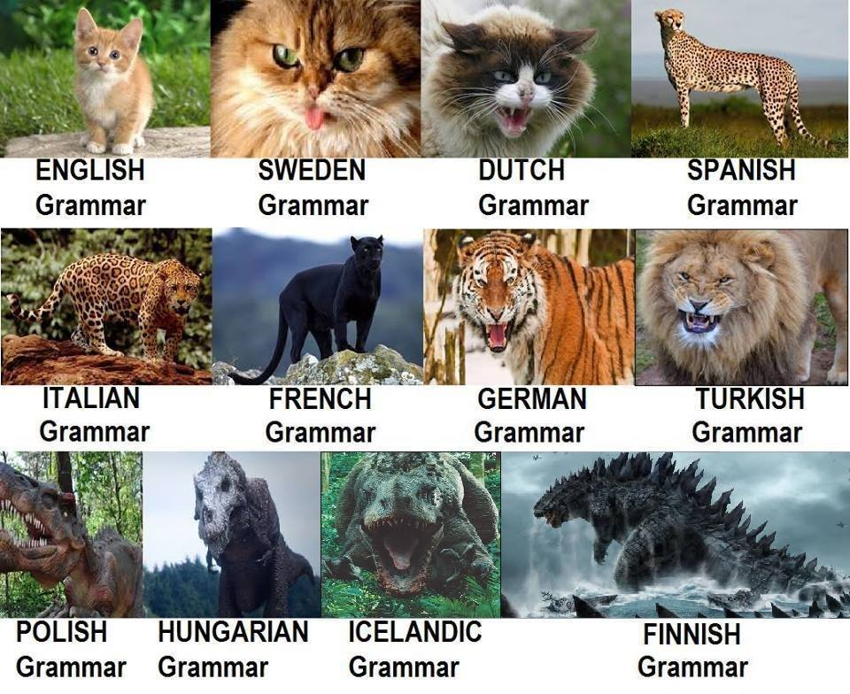

<!DOCTYPE html>
<html lang="en">
<head>
    <meta charset="UTF-8">
	<meta name="viewport" content="width=device-width, user-scalable=no, initial-scale=1.0, maximum-scale=1.0, minimum-scale=1.0">
    <title>Welcome to Finland Stories</title>
    <link rel="stylesheet" href="../style.css">
</head>

</html>

<body class="blog-posts" >
	<section class="header header-top">
		<div class="greeting"><h3>An Interactive Guide to Finland for International Students</h3></div>
		<div class="header-items">
		    <div class="logo">FinInNote</div>
		    <input type=text class="search-bar" name="seach" placeholder="What are you looking for...">
		    <button type="button">Search</button>
		</div>
		<nav class="nav-bar" onclick="myFunctionX(this)">
          <div class="bar1"></div>
          <div class="bar2"></div>
          <div class="bar3"></div>
        </nav>
    </section>
    
    <section class="header header-body">
		<div class=header-breadscrum>
		    <a href="../index.html" id="finland">Home</a>
		    <span class="divider">></span>
		    <a href="../study.html" id="budget">Study</a>
		    <span class="divider">></span>
		    <a href="#" id="practice">Practice</a>
		    <span class="divider">></span>
		    <a href="study-finnish-language.html" id="finnish">Finnish</a>
		    <div class="line"></div>
		    <p id="title">The Ultimate Finnish language study guide</p>
		    
		</div>
    </section>
    
    <section class="header header-bottom">
        <nav class="main-menu" id="myTopnav">
		    <span id="home"><a href="../index.html">Home</a>
		    <div class="line"></div>
           </span>
           
            <span id="about">
                <a href="../about.html">About</a>
                <div class="line"></div>
            </span>
           
            <div class="sub-nav">
                <span id="study"  class="active-page">
                    <a href="../study.html">Study</a>
                    <a class="sub-menu" href="study-finnish-language.html">Language</a>
                    <a class="sub-menu" href="study-universities.html">Universities</a>
                    <a class="sub-menu" href="post1.html">Scholarship</a>
                    <a class="sub-menu" href="study-entrance-exam.html">Exams</a>
                    <div class="line"></div>
                </span>
		    </div>

            <div class="sub-nav">
            <span id="life"><a href="../life.html">Life</a>
                    <a class="sub-menu" href="../life/life-housing.html">Housing</a>
                    <a class="sub-menu" href="../life/life-marriage.html">Family</a>
                    <a class="sub-menu" href="../life/life-pet-visa.html">Pets</a>
                    <a class="sub-menu" href="../life/top-ten-finnish-taboos.html">Tips</a>
                    <a class="sub-menu" href="../life/life-insurrance.html">Insurance</a>
                    <div class="line"></div>
            </span>
            </div>      	        

            <div class="sub-nav">
                <span id="travel"><a href="../travel.html">Travel</a>
                    <a class="sub-menu" href="../travel/travel-budget.html">Budget</a>
                    
                    <a class="sub-menu" href="../travel/travel-top-local-food.html">Food</a>
                    
                    <a class="sub-menu" href="../travel/travel-go-with-us-helsinki.html">Guides</a>
                    <a class="sub-menu" href="../travel/travel-reliable-agencies.html">Agency</a>
                    
                    <div class="line"></div>
                </span>
		    </div>
            
            
            <span id="policy"><a href="../policy.html">Policy</a>
		    <div class="line"></div></span>               

            <span id="contact"><a href="../contact.html">Contact</a>
		    <div class="line"></div></span>    

		</nav>

	</section>
	
	<div id="study-finnish-language">
        <h3 style="text-align: center;color: #99cc00;font-size: 2rem;">Efficient methods in learning Finnish</h3>
        <p><br /><span style="background-color: #ff0000; color: #ffff00;"><strong>INTRO:</strong></span></p>
        <ol>
        <ol>
        <li style="font-weight: 400;" aria-level="1"><em><span style="font-weight: 400;">Learning a new thing is always challenging, especially in achieving knowledge about a new language. Finnish is one of the most difficult languages in the world.&nbsp;</span></em></li>
        <li style="font-weight: 400;" aria-level="1"><em><span style="font-weight: 400;">Common problems in learning the Finnish languages and other ones: vocabulary, pronunciation, grammar, ...</span></em></li>
        <li style="font-weight: 400;" aria-level="1"><em><strong>This article will help you to find out efficient ways to make Finnish easier when learning.&nbsp;</strong></em></li>
        </ol>
        </ol>
        <p>&nbsp;</p>
        
        <p>&nbsp;</p>
        <h3><span style="background-color: #ff0000; color: #ffff00;"><strong>LIST ITEMS: </strong></span></h3>
        <h3><span style="font-weight: 400;">1.  Achieving the pieces of knowledge is always the hard and challenging road, it&rsquo;s a rule of nature. It demands you to have a strong spirit and hard-working attitude to lead to success, especially in learning a new language. When you do that, you are absorbing the most quintessential things from the civilization and culture of a nation because people often speak, language is the refinement and quintessence of the nation. It contains the customs and history of that country. With Finnish - one of the toughest languages, maybe it contains many precious things of Finland. So, don&rsquo;t worry if you have some problems in the process of learning it because when you learn more about it, you can find out many exciting things about Finland. It is useful for you to know and understand more clearly and sensitively about a country.&nbsp;</span></h3>
        <h3><span style="font-weight: 400;">2. We've found that there always exist many popular elements which make a new language difficult with a beginner such as Pronunciation, vocabulary, grammar&nbsp;</span><span style="font-weight: 400;">Pronunciation: This is an important part when learning a new language. It&rsquo;s also challenging because your problems are not only trying to speak and pronounce like a native person as much as you can but you also have to learn and understand well about slangs, local language and communication style, they are less common and require you approach in a long time if you want your conversation with native people easily and effectively.&nbsp;&nbsp;&nbsp;</span></h3>
        
        <ol style="list-style-type: lower-alpha;">
        <li style="font-weight: 400;" aria-level="1"><span style="font-weight: 400;">Vocabulary: Learning vocabulary is always a good way to learn a new language because when you can remember many new words and its connection, it will be easy for you to start a conversation confidently with other people, especially with native people. The more vocabulary you remember, the more effective you will be in communication as you will have many suitable ways to describe things in a situation without being limited by your words.</span></li>
        <li style="font-weight: 400;" aria-level="1"><span style="font-weight: 400;">Grammar: The last problem is the most difficult one because grammar is always a big barrier for a new beginner when learning a new language. Each of the different languages will have diverse structures and grammar. That helps one language to separate from another, to be unique in people's eyes. However, it also prevents a learner from achieving success in a conversation because when someone uses, writes or speaks a language without the true form of grammar, it will make others misunderstand and their conversation won&rsquo;t be effective and clear. The consequences after that are unpredictable such as other people will not understand you or it's also an embarrassing situation. That's why you have to understand grammar well before using it.</span></li>
        <li style="font-weight: 400;" aria-level="1"><span style="font-weight: 400;">Finnish is not an exception because it has many things as I listed before ( long and complex word and vocabulary, many grammar cases, &hellip;) but don't worry, there are several effective ways for you to learn and understand Finnish easily and quickly, which are detailed in the next section of this article.&nbsp;</span></li>
        
        </ol>
        <h3><span style="font-weight: 400;"> 3. Useful methods in learning Finnish.</span></h3>
        <ul>
        <li>Taking the time to find a book that is suitable for you is the best: the library and the internet are full of them. Self-study takes a lot of work but it will also help you later because when you learn it by yourself, you can explore many precious things and maybe you can also find out some type of abilities like analysis or quick adaptation in learning a new language.</li>
        
        <li style="font-weight: 400;" aria-level="1"><span style="font-weight: 400;">&nbsp;There are now many language courses in the world nowadays and it's not difficult to find a suitable one for you. Just take an intensive Finnish course or at least some basic course in the beginning to get the main idea of grammar. Combining Grammar + Vocabulary + Speaking will help you to conquer Finnish.&nbsp;</span></li>
        <li style="font-weight: 400;" aria-level="1"><span style="font-weight: 400;">Listening to Finnish audiobooks is a good way to learn Finnish quickly because when you adapt with the way the native people say, you can use it as your experience and learn it easily. Listening and watching social networks about Finland&rsquo;s knowledge is also useful when you want to learn new vocabulary or grammar.&nbsp;</span></li>
        <li style="font-weight: 400;" aria-level="1"><span style="font-weight: 400;">If you are a busy person, learning Finnish by apps on a telephone is a good and convenient method because the time you spend learning is flexible. You can learn anywhere, anytime you want, all you need is just your phone.</span></li>
        <li style="font-weight: 400;" aria-level="1"><span style="font-weight: 400;">Besides those, your spirit plays an important part in learning Finnish. If you are interested in one thing, difficulties are just a small challenge on the way you master it. Finding a reason will be a stepping stone for your learning process such as your love for Finland, your interest in learning a new language, your dream to travel Finland - one of the happiest countries in the world, etc.&nbsp;</span></li>
        </ul>
        <p>&nbsp;</p>
        <h3><span style="background-color: #ff0000; color: #ffff00;">CONCLUSION</span><br> Finnish is always a challenging language in the world. However, with your enthusiasm and passion, I think you can do it well. Just believe in yourself and follow our guidelines, it may be helpful when you are learning or researching about Finnish. You can also find some articles about Finland and many things related to it through our website.&nbsp;</h3>


	</div>
    <section class="footer">
		<div class="footer-grid-container">
		    <div class="footer-0"><h3>FinInNote</h3>
		    <span>@2020 FPP <a href="policy.html">PRIVACY POLICY</a></span></div>
           <div class="social-media"><h4>Follow Us</h4>
           <a href="https://facebook.com"><span id="facebook" style=background-image:url(images/fb.png)></span></a>
           <a href="https://youtube.com"><span id="youtube" style=background-image:url(images/youtube.png)></span></a>
           <a href="https://instagram.com"><span id="instagram" style=background-image:url(images/instagram.png)></span></a>
           <a href="https://twitter.com"><span id="twitter" style=background-image:url(images/twitter.png)></span></a>
           <a href="https://linkedin.com"><span id="linkedin" style=background-image:url(images/linkedin.png)></span></a>
           </div>
		    
		    <div class="footer-1">About
		        <p>Welcome to Finland!<br>FinInNote is on a mission to assist all International Students to vistit and integrate into Finland easily and effortlessly.<br>Because we KNOW and we CARE! <br>
		        SEND US A LETTER! In case you would like to chat.</p>
		    </div>
		    <div class="footer-2">Study
		        <ul>
		            <li><a href="finnish-language.html">Language</a></li>
		            <li><a href="universities.html">Top Universities</a></li>
		            <li><a href="scholarship">Scholarships</a></li>
		            <li><a href="exam-admission.html">Exams & Admission</a></li>
		            <li><a href="study-guides.html">Study Guides</a></li>
		            <li><a href="community.html">Community</a></li>
		        </ul>
		    </div>
		    <div class="footer-3">Life
		        <ul>
		            <li><a href="cost-of-living.html">Cost of living</a></li>
		            <li><a href="lifestyle.html">Lifestyle</a></li>
		            <li><a href="accommodation.html">Accommodation</a></li>
		            <li><a href="food-expense.html">Food & Expenses</a></li>
		            <li><a href="holidays-events.html">Holidays & Events</a></li>
		            <li><a href="hall-of-joy.html">Hall of Joys</a></li>
		        </ul></div>
		    <div class="footer-4">Travel
		    <ul>
		            <li><a href="attractions.html">Top Attractions</a></li>
		            <li><a href="family-travel.html">Family on budget</a></li>
		            <li><a href="journey-planner.html">Journey Planner</a></li>
		            <li><a href="what-to-bring.html">What to bring?</a></li>
		            <li><a href="transportation.html">Transportation</a></li>
		            <li><a href="travel-recommendations.html">Recommendations</a></li>
		        </ul></div>
		    <div class="footer-5">Trade Center
		    <ul>
		            <li><a href="secondhand-items-hunt.html">Secondhand Items Hunting</a></li>
		            <li><a href="rent-buy.html">Rent or Buy</a></li>
		            <li><a href="coupons.html">Coupons & Discount</a></li>
		            <li><a href="lucky.html">Feeling lucky</a></li>
		            <li><a href="wholesale.html">Wholesale</a></li>
		        </ul></div>
		    <div class="footer-6">Services
		    <ul>
		            <li><a href="inquiries.html">Inquiries & support</a></li>
		            <li><a href="faqs.html">FAQs</a></li>
		            <li><a href="storage-service.html">Storage Service</a></li>
		            <li><a href="apartment-hunting.html">Apartment Hunting</a></li>
		            <li><a href="pickup-deliver.html">Pickup & Deliver</a></li>
		            <li><a href="job.html">Job Application</a></li>
		        </ul></div>
		</div>
		<div class="back-to-top-button">
		<a href="#post1" class="footer-button"><h4>Back To Top</h4> <span style=background-image:url(images/character-01.png)></span></a>
		</div>
		<section class="footer-bottom">
            
            <div><h3>All Rights Reserved @2020</h3></div>		    
		</section>

    </section>
    
    	<script>
    // When the user scrolls the page, execute myFunction
    window.onscroll = function() {myFunction()};

    // Get the navbar
    var myTopnav = document.getElementById("myTopnav");

    // Get the offset position of the navbar
    var sticky = myTopnav.offsetTop;

    // Add the sticky class to the navbar when you reach its scroll position. Remove "sticky" when you leave the scroll position

    function myFunction() {
        
        
      if (window.pageYOffset >= sticky-13) {
          
        myTopnav.classList.add("sticky")
      } else {
        myTopnav.classList.remove("sticky");
      }
    }
    </script>
	<script src="script.js"></script>
</body>


